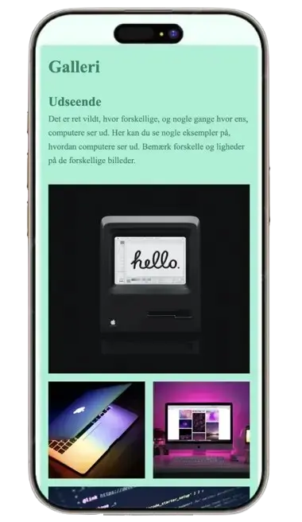
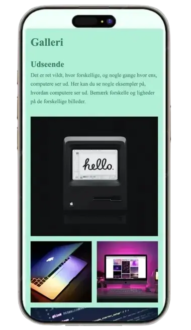

GRUNDLÆGGENDE WEB
I dette tema arbejdede jeg med opbygning af websites ved hjælp af HTML og CSS. Jeg lærte grundlæggende principper for responsivt webdesign, strukturering af indhold og brug af designkonventioner. Derudover arbejdede jeg med Figma, billedbehandling, semantisk markup og mobile-first design, hvilket gav et solidt fundament for videre arbejde med webudvikling.
 

PROCES
I dette tema arbejdede jeg med opbygning af websites ved hjælp af HTML og CSS. Processen startede med at sætte mig ind i grundlæggende designprincipper og webkonventioner, herunder struktur, hierarki og responsivt design. Jeg arbejdede med wireframes og layout i Figma, som dannede grundlag for opbygningen af sitet.
Herefter arbejdede jeg med semantisk HTML, CSS grid og flexbox samt en mobile-first tilgang. Undervejs testede og justerede jeg layoutet, så siden fungerede på forskellige skærmstørrelser og havde en tydelig navigation.
Figma
LØSNING &
LÆRING
Den færdige løsning er et responsivt website, der fungerer på både mobil og desktop og er opbygget med fokus på struktur og overskuelighed. Layoutet er udviklet med en mobile-first tilgang, så indholdet tilpasses forskellige skærmstørrelser.
Gennem temaet har jeg opnået en grundlæggende forståelse for, hvordan websites struktureres og opbygges ved hjælp af HTML og CSS. Jeg har lært at arbejde mere systematisk med kode og fået indsigt i vigtigheden af semantisk markup og en klar opbygning af indhold.
Derudover har jeg fået en bedre forståelse for, hvordan designvalg og kode hænger sammen i udviklingen af digitale løsninger, og hvordan små justeringer i layout og struktur kan have stor betydning for brugeroplevelsen.
Se færdig løsning